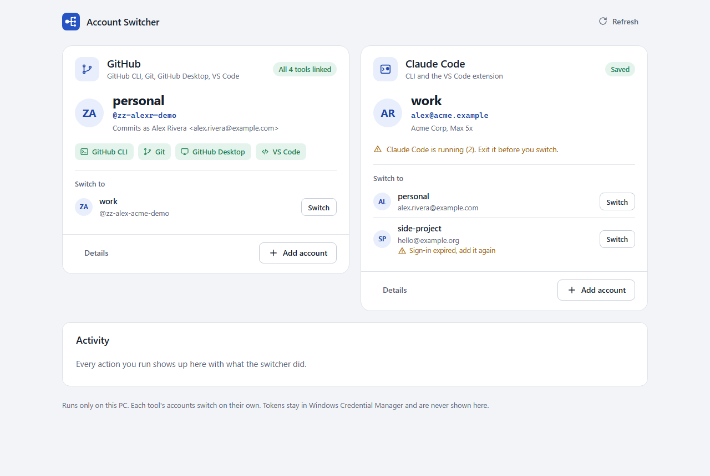

Switch GitHub and Claude Code accounts on Windows in one click
Work and personal accounts on one PC. One click moves the GitHub CLI, git, GitHub Desktop and VS Code to another GitHub account, and Claude Code to another Claude account. No signing out and back in.
Free and open source. For Windows 10 and 11. Runs only on your PC.
GitHubFour tools, one account
- GitHub CLIgh @you-work
- GitPushes and commits @you-work
- GitHub DesktopApp sign-in @you-work
- VS CodeGitHub session @you-work
Claude CodeSwitches on its own
- Claude CodeTerminal you@home.test
- VS CodeClaude extension you@home.test
Pick an account on each. Work GitHub with a personal Claude account is fine.

Every tool keeps its own sign-in
The GitHub CLI, git, GitHub Desktop, VS Code and Claude Code each keep their own login, and none of them follows the others. Moving to another account usually means signing out and back in everywhere, and signing out deletes the saved token. The switcher signs every account in once and swaps the saved sign-ins when you switch.
| Tool | Where its login lives | What a switch does |
|---|---|---|
| GitHub CLI | Credential Manager gh:github.com:<user> | gh auth switch |
| Git | Credential Manager git:https://github.com and the global git config | Restores that account's token, sets user.name, user.email and Git Credential Manager's default account |
| GitHub Desktop | %APPDATA%\GitHub Desktop\Local Storage and Credential Manager | Swaps in the account's saved Local Storage and restores its token |
| VS Code | ~\.vscode-shared\sharedStorage\state.vscdb, encrypted by VS Code | Writes back the account's saved session, still encrypted |
| Claude Code | ~\.claude\.credentials.json (sign-in) and ~\.claude.json (account) | Saves the current sign-in, then writes the profile's sign-in and account back |
What it does
- Shows where you are signed in
- A card per tool with the account it uses now. For GitHub, which account each of its four tools really uses, with mismatches flagged.
- Switches in one click
- Confirm once. A log shows every step the switcher took. GitHub and Claude Code switch on their own.
- Never signs you out
- Tokens are backed up and restored inside Windows Credential Manager. Claude Code's sign-in is saved again before every switch, because it changes as Claude Code refreshes it.
- Stays on your PC
- A localhost server with a key that changes every run. Tokens are never shown, logged or sent anywhere.
- Never kills your work
- GitHub Desktop and VS Code close as if you closed them, so unsaved-work prompts still appear, then reopen. Claude Code sessions are never closed for you: the switch waits until you exit them.
- Walks you through adding an account
- Step-by-step sign-in for each tool with live status. Progress survives a page refresh. Missed a tool? Sign in again and the profile is updated.
Quick start
You need:
- Windows 10 or 11 with Windows PowerShell 5.1
- Python 3 on
PATH, standard library only, for the VS Code and Claude Code parts - Node.js 18 or later, only to build the page once
- For GitHub: Git for Windows with Git Credential Manager, and the GitHub CLI 2.40 or later. GitHub Desktop and VS Code are optional
- For Claude Code: Claude Code signed in with a Claude subscription (Pro, Max or Team)
-
Get the code
git clone https://github.com/sale-shubham/account-switcher.git cd account-switcher
-
Build the page once
cd web npm install npm run build cd ..
-
Start the switcher
.\switcher.ps1 -Ui
Your browser opens the dashboard. Keep the PowerShell window open while you use it.
-
Add each account
On each card, click Add account and follow the steps, once per account. On the Claude Code card, Save as profile keeps the account you are signed in to now. After that, switching is one click.
Prefer the command line?
.\switcher.ps1 # show every tool's account and saved profiles .\switcher.ps1 github work # switch gh, git, GitHub Desktop and VS Code to 'work' .\switcher.ps1 github -Save work # save what the GitHub tools use now as 'work' .\switcher.ps1 claude personal # switch Claude Code to 'personal' (exit it first) .\switcher.ps1 claude -Save personal # save Claude Code's current sign-in as 'personal'
Questions
How do I use two GitHub accounts on one Windows PC?
Add each account once with Add account on the GitHub card (or github -Save on the command line). After that, one Switch moves the GitHub CLI, git, GitHub Desktop and VS Code to the other account.
Does gh auth switch also change the account git pushes with?
Not with Git Credential Manager, the Git for Windows default. gh auth switch changes only the GitHub CLI. Git keeps pushing with the account saved in Git Credential Manager, and commits keep the old user.name and user.email. The switcher changes all three.
How do I switch GitHub accounts in GitHub Desktop or VS Code without signing out?
Signing out deletes the saved token, so you sign in from scratch every time. The switcher closes the app normally, swaps in the sign-in it saved for that account, and reopens it.
How do I switch between Claude Code accounts?
Add each Claude account once with Add account on the Claude Code card. Then exit Claude Code and click Switch. New Claude Code sessions, in the terminal and in VS Code, use the new account, with no /login.
Why does Claude Code have to be closed to switch?
A running session keeps its sign-in in memory and writes it back when it refreshes it, which would undo the switch. The switcher never kills a session; it tells you how many are still running.
Is it safe? Where are my tokens?
Tokens stay in Windows Credential Manager, encrypted for your Windows user. The switcher runs on localhost only, with a key that changes every run, and never shows a token.
Does it work on macOS or Linux?
No. It is built on Windows Credential Manager and the Windows app data folders.
What does it not cover?
SSH keys, GitHub Enterprise Server hosts, the Claude desktop app, and Claude Code signed in with an API key instead of a subscription.